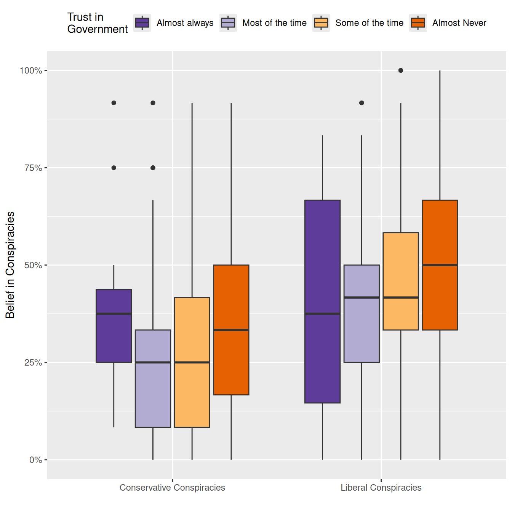
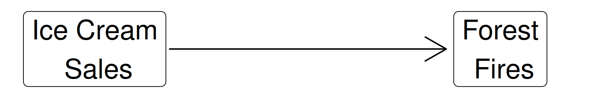

Building a Causal Argument
“Causal inference refers to the process of drawing a conclusion that a specific treatment (i.e. intervention) was the ‘cause’ of the effect (or outcome) that was observed” (Frey 2018).

Building a Causal Argument


Building a Causal Argument


Randomized Controlled Trials (RCTs)

The Challenge of Observational Data

The Challenge of Observational Data

The Challenge of Observational Data

Do ice cream sales create arsonists?




An Identification Strategy